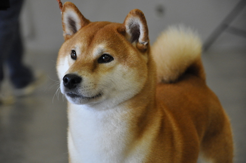
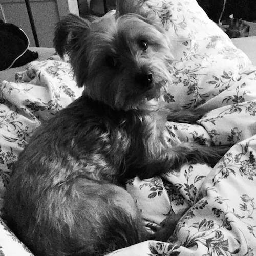

Our dog blog (dlog)
This is a dlog about our dogs Koji and Dobbie
Koji

Some facts about Koji:
- age: 13 years
- weight: 35 pounds
- favorite activites:
- barking at his own reflection
- sleeping only during the day
- treats(bread, cheese)
- walking/hopping
Dobbie

Some facts about Dobbie:
- alias: Bobbie
- age: 6 years old
- weight: 12 pounds
- favorite activities:
- complaining (barking at dogs, people, and himself)
- having existential crises
- walkies
- basking in sunlight